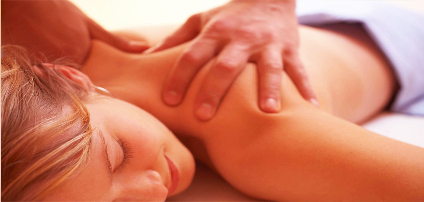

MASAJE RELAJANTE

MASAJES TERAPÉUTICOS DESCONTRACTURANTES
No permitas que el estrés acabe contigo, combátelo con tres masajes en uno, masaje relajante, circulatorio y reductor, el nuevo plan de Masajearte. Dedícate un tiempo para ti y mímate a manos de buenos profesionales.
MASAJE ANTIESTRÉS
Masaje sedante que alivia la tensión y el estrés acumulado. La técnica de masaje antiestrés utilizada ayuda a liberar de nuestro cuerpo la rigidez muscular y el exceso de cansancio, mediante la utilización de aceites esenciales cuidadosamente seleccionados.
AsÍ mismo, alivia el estrés emocional, relaja los músculos ya que aumenta la circulaciÓn de la sangre, eliminando las toxinas que estén en el torrente sanguíneo.
.jpg)
El masaje de tejido profundo es un tipo de masaje destinado a penetrar en las estructuras más profundas del tejido del músculo y la fascia, también llamado tejido conectivo.

Si estás atravesando una semana pesada, llena de imperantes responsabilidades y actividades en proceso de disfrutar de un masaje relajante sería la actividad particular más efectiva para aliviar la presión y disminuir las preocupaciones mientras dispone en orden tus ideas y aclara tu mente.
-
El masaje relajante
-
Un masaje relajante posiblemente, es la técnica terapéutica con mayor antigüedad de uso dentro del ser humano como recurso natural contra el dolor. Gracias a la evolución de las técnicas empleadas en el masaje, existen varios tipos de masajes como el de relajación, el terapéutico, y alcanzan áreas especializadas como el masaje deportivo o linfático.